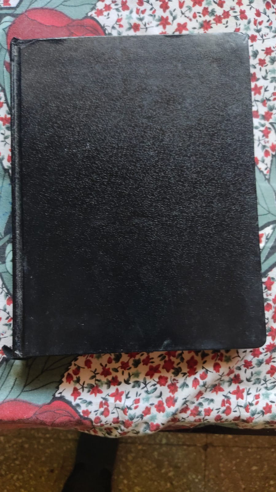
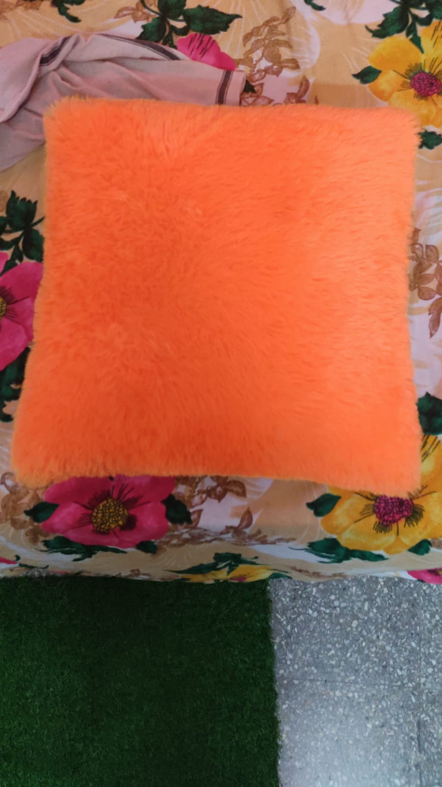
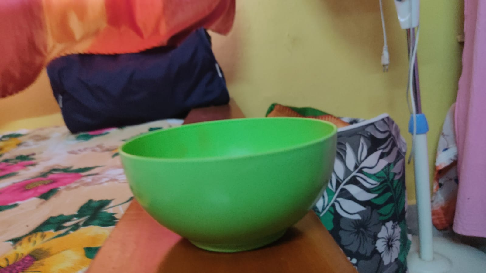

CASE STUDY BETWEEN GOOGLE LENS AND MOBILENET

Mobile net: Cardboard
Google lens: Book

Mobile net: Curtain
Google lens: Pillow

Mobile net: Planetarium
Google lens: Bowl
Mobile net: Bib
Google lens: Hello kitty
According to my casestudy Google lens is accurate.